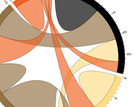
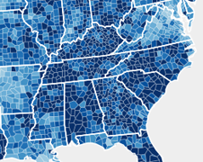
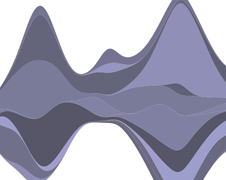
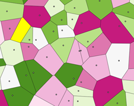
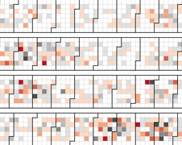
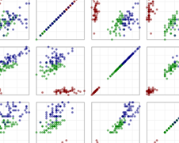

This presentation is an HTML5 website
Press → key to advance.
Justin Cormack @justincormack
Imagination is the limit to what you can make...
     
Data from UK cycling casualties, from the Department of Transport.
<svg id="accidents"></svg>
<script src="d3/d3.min.js"></script>
<script src="d3/d3.csv.min.js"></script>
<script src="d3/d3.time.min.js"></script>
<script>
function graph(p) {
...
}
d3.text("data/timetric.csv", graph);
</script>
Another useful tip for storing numerical data is to use a Google spreadsheet, as there is a JSONP interface to extract the data in a reasonably easy way, and it is easy to edit, giving you a cheap numerical CMS!
Parse our CSV data, as it is just strings, and set up the size of the SVG area, and the smaller area we will draw the data in.
/* projection functions for convenience */
function date(e) { return e[0]; };
function val(e) { return e[1]; };
var d = d3.csv.parseRows(p)
.map(function(e) { return [d3.time.format.iso.parse(date(e) + "Z"),
parseFloat(val(e))];
});
/* these are the sizes of our graph */
var xmax = 500;
var ymax = 300;
var svg = d3.select("svg#accidents")
.attr("width", xmax + 100)
.attr("height", ymax + 100)
var g = svg.append("g")
.attr("transform", "translate(80,20)");
Let us work out the largest and smallest values in our data, and map them to the drawing area.
/* extent of our data */
var xs = d3.extent(d, date); // returns array of [minimum, maximum]
var ys = d3.extent(d, val);
/* scales */
var x = d3.time.scale().domain(xs).range([0, xmax]);
/* y starts at the top and goes down in SVG */
var y = d3.scale.linear().domain(ys).range([ymax, 0]).nice();
/* scales applied to data */
function xx(e) { return x(date(e)); };
function yy(e) { return y(val(e)); };
The simplest chart draws some points (circles) at each data point.
g.append("g")
.attr("class", "points")
.selectAll("circle")
.data(d)
.enter().append("circle")
.attr("r", 5)
.attr("cx", xx)
.attr("cy", yy)
.append("title")
.text(function(e) { return date(e).getFullYear() + ": " + val(e); });
This creates another SVG group element, with a class of points.
Then it selects all the circle elements under that, which there are none yet. We could have used any selection here, but doing it like this makes updates easier.
Then we attach our array of data d, and say that we wish to append a new circle to the ones (enter()) that do not yet exist, which is all of them initially.
Then we set the attributes: r (radius) is a constant, but cx and cy, the position of the centre of the circle will be a function of the data item corresponding to the point.
Add some CSS to make it look nicer.
svg {
background-color: #fafafa;
}
.points circle {
stroke: red;
stroke-width: 1px;
fill: #fcdfff;
}
SVG works with CSS just like HTML, but there are some different properties such as stroke and fill which most SVG elements use for the outline and centre of shapes.
yAxis = d3.svg.axis().scale(y).orient("left").
ticks(4).tickSize(6, 0, 0);
g.append("g")
.attr("class", "y axis")
.attr("transform", "translate(" + -10 + ",0)")
.call(yAxis);
xAxis = d3.svg.axis().scale(x).orient("bottom").
ticks(d3.time.years, 5).tickSubdivide(4).tickSize(6, 3, 3);
g.append("g")
.attr("class", "x axis")
.attr("transform", "translate(0," + (ymax + 10) + ")")
.call(xAxis);
g.append("text")
.attr("transform", "rotate(-90),translate(-250,-65)")
.text("cyclists killed or injured");
.axis path, .axis line {
fill: none;
stroke: gray;
stroke-width: 1px;
}
Lines and paths are not made of separate DOM elements for each section.
Instead they have a little language <path d="M0,0 L10,0 L10,10 L0,10 Z">, but there are functions to help us build these strings.
var line = d3.svg.line()
.x(xx)
.y(yy);
g.append("path")
.attr("class", "line")
.attr("d", line(d));
var path = line(d) + "L500,300L0,300Z"; // close path around bottom
g.append("path")
.attr("class", "area")
.attr("d", path);
<svg id="accidents">
<defs>
<linearGradient id="fade" x1="0%" y1="50%" x2="50%" y2="100%">
<stop offset="0%" style="stop-color:#F5A9A9" />
<stop offset="100%" style="stop-color:#D8F6CE" />
</linearGradient>
</defs>
</svg>
path.line {
fill: none;
stroke: red;
stroke-width: 1px;
}
path.area {
stroke: none;
fill: url(#fade);
}
Our graph just appears, let us add a little transition as it draws.
For a simple uniform, delayed fade this is simple:
g.append("path")
.attr("class", "area")
.attr("fill-opacity", 0.0001)
.attr("d", path)
.transition().delay(2000).duration(3000).attr("fill-opacity", 1);
But this is d3, we can also use functions, so the transition is data-dependent
var fade = d3.scale.linear().domain(xs).range([1000, 6000]);
function ff(e) { return fade(date(e)); };
g.append("g")
.attr("class", "points")
.selectAll("circle")
.data(d)
.enter().append("circle")
.attr("r", 0)
.attr("cx", xx)
.attr("cy", yy)
.transition().duration(ff).attr("r", 5);
Now let us dynamically add new data, as we would with real time updates.
First add new data and update all our scaling functions, nothing new here.
d.push(newitem);
var xs = d3.extent(d, date);
var ys = d3.extent(d, val);
var x = d3.time.scale().domain(xs).range([0, xmax]);
var y = d3.scale.linear().domain(ys).range([ymax, 0]).nice();
function xx(e) { return x(date(e)); };
function yy(e) { return y(val(e)); };
Select the existing circles and transition to new position
var update = g.selectAll("g.points")
.selectAll("circle")
.data(d);
update.transition().duration(1000)
.attr("cx", xx)
.attr("cy", yy)
.attr("r", 5);
Now let us add the new points, just the ones returned by enter().
update.enter()
.append("circle")
.attr("cx", xx)
.attr("cy", yy)
.attr("r", 0)
.transition().duration(1000)
.attr("r", 5);
Update the axes.
xAxis.scale(x);
yAxis.scale(y);
svg.select("g.x.axis").transition().duration(1000).call(xAxis);
svg.select("g.y.axis").transition().duration(1000).call(yAxis);
The line is fairly simple.
var line = d3.svg.line()
.x(xx)
.y(yy);
d3.selectAll("path.line").transition().duration(1000)
.attr("d", line(d));
This works as for a string with numbers in, d3 interpolates each corresponding one, and leaves new ones unchanged.
If we do this for the area, it behaves a bit oddly, as it interpolates the extra points at the end
var path = line(d) + "L500,300L0,300Z";
d3.selectAll("path.area").transition().duration(1000)
.attr("d", path);
An interpolation function tells us how to calculate in between values for transitions.
var path = line(d);
var trail = "L500,300L0,300Z";
d3.selectAll("path.area").transition().duration(1000)
.attrTween("d", function(d, i, a) {
return function(t) {
return d3.interpolateString(a.slice(0, -trail.length), path)(t) + trail;
};
});
We can adjust the X axis scale as it gets longer.
if (date(d[d.length -1]).getFullYear() - date(d[0]).getFullYear() > 50) {
xAxis.ticks(d3.time.years, 10).tickSubdivide(9)
}
http://bost.ocks.org/mike/shuffle/
This site demonstrates different shuffling algorithms:
| Main mode | Area of workplace | |||||
|---|---|---|---|---|---|---|
| Central London | Rest of Inner London | Outer London | All London | Rest of Great Britain | Great Britain | |
| All modes | 55 | 39 | 27 | 39 | 20 | 23 |
| Car and van | 48 | 32 | 25 | 29 | 20 | 20 |
| Motorbike, moped, scooter | 36 | 29 | 27 | 31 | 19 | 21 |
| Bicycle | 33 | 24 | 20 | 25 | 15 | 17 |
| Bus and coach | 47 | 39 | 36 | 40 | 33 | 34 |
| National Rail | 69 | 66 | 43 | 66 | 47 | 58 |
| Underground, tram, light rail | 49 | 45 | 37 | 47 | 42 | 46 |
| Walk | 21 | 16 | 13 | 15 | 12 | 13 |
A good table is a great accessible fallback that works without Flash, and on any mobile device!
A table also works for a screen reader.
You can progressively enhance the table into an interactive graphic if you detect SVG.
It is possible to use d3 to generate simple HTML bar charts without using SVG, just using sized <div>s.
These can by styled and coloured, and animated too. You cannot do anything complex, but again it will work on old mobile browsers as well as IE.
var x = d3.scale.linear()
.domain([0, d3.max(data)])
.range(["0px", "420px"]);
chart.selectAll("div")
.data(data)
.enter().append("div")
.style("width", x)
.text(function(d) { return d; });
http://nickrabinowitz.com/projects/d3/alluvial/alluvial-dynamic.html